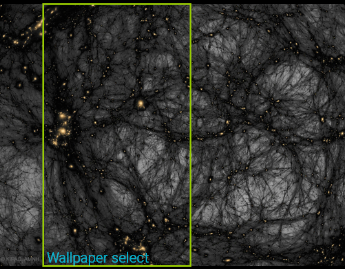

Using wallpapers
With Fun In Space you can create wallpapers for your phone background from your favourite images. The following features are available
- Define an image range matching display format
- Remove wallpaper
- Shuffle between several images
- Select times at which shuffle happens
TODO: link to howto-video here as well
Defining a wallpaper
While watching the image in fullscreen, just long click on the image. A selection rectangle appears, as shown below:

This rectangle has the aspect ratio of your screen and you can move it over the image to select the range that should be set as wallpaper background on your phone.
Once you are done, just do another long click on the image to confirm your selection.
After returning from the image view with the back button, you are asked if you want this selection to be set as your new active wallpaper immediately. If you answer no, the wallpaper will just be kept for later activation.
The thumbnail displays the new wallpaper status in the lower right edge:
 A wallpaper exists for this image
A wallpaper exists for this image
 This is the active wallpaper
This is the active wallpaper
Using the shuffle function
Shuffle automatically changes the background image with a random image selected from your stored wallpapers. The app does not need to be running. This is by default switched off
Shuffle can be enabled in the settings dialog. In addition, you can select the full hours, at which shuffles should happen.
Note, that shuffle is only available with Android 5 and above.